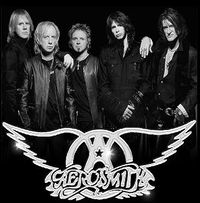

Rockero
 De: La Frikipedia, la enciclopedia extremadamente seria.
De: La Frikipedia, la enciclopedia extremadamente seria.
| De la serie tribus urbanas del mundo:
|
| Rockero
|
Ejemplo de la tribu

|
| Jinetes de Harley Davidsons, amantes del Rock y bebedores de cerveza.
|
|
| Hábitat
|
Conciertos de Rock, Clubs de Motocicletas, Bares.
|
| Inteligencia
|
¿Que crées?
|
| Frase favorita
|
We are Riders On The Storm! ¡We Will Rock You!''
|
| ¿Peligroso?
|
Si, ten cuidado y no hables mal de The Doors o Pink Floyd sino quieres una golpiza.
|
| Obsesión
|
Romper las reglas, viajar en sus motocicletas y tomar cerveza.
|
| Notas
|
Si hasta este punto no has escuchado "The Dark Side of the Moon", mejor retirate.
|
Estos seres Rockerus Rockandrollensis, se ven todos los días, de día y de noche. Son una especie resaltada desde los 50's, han cambiado conforme la época, y evolucionado. El rock fue el padre creador de muchos géneros y tendencias, como el heavy metal, los hippies y mas adelante el grunge(entre muchas cosas que ha creado esta música de los Dioses)
Características Del Rockero: Se caracterizan por ser conocidos por todo el mundo desde los 50's, rompiendo leyes y montando sus Harleys, tomar cerveza en bares y lucir una camisa de fondo negro con su chaqueta. Algunos usan camisetas de Pink Floyd, The Doors, The Beatles, The Faces, Iron Maiden, Metallica, AC/DC ...
Muy notorios por sus melenas Rockeras, y su carácter sereno y pacifico a menos que sea molestado. En general sino esta montando su Harley o en un tour de 1 año con la banda Greatful Dead, están en los bares fumando cigarrillos y tomando cerveza.
Su Hábitat
Acaso has visto a alguien mas Rockero?
Beben mucha cerveza y agua de alcantarilla (lo que en mayoría les hace obesos) fuman cigarrillos, montan sus motocicletas y su rebeldía aparta a golpes al que se le oponga.
Cuando el día termina, y se escuche un motor, no no es el nuevo coche de el de alado, es un Jinete que va a todo galope hacia un destino no conocido, y no sabrás qué te ataco cuando despiertes, y no sepas por que estas desmayado, tranquilo no eres ni el primero ni el ultimo en ser atacado por un Rockero.

existen juegos friki para rockeros
Alimentación
La alimentación de este individuo es muy variada, pues a través de los años, se ha conservado, y adaptado algunas nuevas tendencias conforme han ido cambiando las eras y etapas de el Rock. En sus inicios el Rockero por excelencia consumía el su peso mas el de su motocicleta en cigarrillos y cerveza de barril. Conforme las eras del Rock fueron naciendo, las posibilidades de consumo crecían. Tiempo después, estos consumían LCD de desayuno, y cerveza con azúcar marca cocaína de almuerzo y cena. Hasta que los conservadores cambiaron sus gustos y los condujeron hacia la Marihuana y posteriormente a la Heroína. Ahora que el menú es grande, tienen de donde elegir en sus bares Rockeros.
Pero generalmente el Rockero puro y duro siempre tiene a su alrededor botellas y botellas de Jack Daniel's ya sea para ingerirlas o para lanzárselas a cualquier indeseado.
Evolución Del Rockero
Todo empezó cuando los tíos como Elvis Presley y Frank Sinatra comenzaron con el Rock N' Roll en los 50's.
Muy pronto el Rock N' Roll evolucionó a el Rock!
Adoptando una apariencia de matones serena y calmada, y siempre vestidos de negro. Con sus motocicletas de florecitas de llamativas calaveras y llamas, melena larga o en caso de no poseer una, un casco de motocicleta o pañuelo a lo Hard Rock ayuda. Desde sus principios se adopto una postura de bebedores de cerveza y fumar mota (adiccion muy presente entre los Hippies), claro que con los años ha ido disminuyendo, al principio en conciertos de The Doors y Grateful Dead[1], ese era tu pase de entrada. Al principio los Rockeros consumian a diario su peso en mota, pero con los años eso fue variando a LSD, televisión, Cocaína, Heroína y Coca-Cola.
La historia los Rockeros, se divide en tres grandes eras, y han mutado para convertirse en otros animalejos otros seres.
- Softh Rock
- Rock
- Hard Rock
Las Tres Eras De Los Rockeros
A lo largo de estas eras, fue el Rock que se mantenía como el himno de el mundo completo, el Rock reinaba, los Rockeros estaban en su época dorada.
En estas eras, los Rockeros sufrieron algunos cambios de estilo así como el Rock, mutaron en otras cosas... y se fusionaron con otros bichos.
Atravez de las epocas lo unico que no cambio, fue el gusto por el pelo largo y libre, el color negro (aunque decae un poco en la 2nda ya lo veras), y la misma hermandad que une a todos los Rockeros atravez del mundo.
- 1. Primera Era: Era del Rockero: Esta fue la primera era, era donde todos los tíos vestían de negro y camisas de color psicodélico (los primeros rockeros de los 60's fueron los Hippies), claro todo variaba dependiendo de la época del año (la verdad no, siempre firmes y de negro!).
- Verano: Se usan camisetas negras sin mangas, de tela, algodón, hasta mezclilla.
- En Otoño: Se volvía a lo básico, con una camisa normal de
rosado negro, con insignias bordadas de Rosita Fresita The Doors, Queen, o Cream.
- En Primavera lo mismo.
- Y en Invierno: Es cuando más se usa la clásica camisa de cuero negra, acompañada por camisas de cualquier banda.
Se contaba con artistas como: The Beatles, más tarde, The Doors, Greatful Dead, Pink Floyd, Cream, The Who, y The Rolling Stones.
En esta era, es cuando nacen los primeros motociclistas, o Jinetes Rockeros. Todos al ritmo del Rock, recorriendo largas distancias, y en largos viajes sin rumbo alguno. Algunas veces meses sin ir a casa, hay casos en que iban con sus artistas a travéz de su tour completo, con sus motocicletas [2] y una buena dosis de mota claro.
...tiempo después de esta primera era del Rock, comienzan con el tema de la paz y el amor, con este símbolo ☮. Algunos Rockeros con este tema, y con colores muy psicodelicos, se convierten en Hippies, quienes consumían muchos tipos de drogas y en cantidades mucho más grandes que cualquier otro ser.
2. Segunda Era: Era del Soft Rockero: Después de la era donde domino el Rock y el color negro, pasamos a fines de los 60's y principios de los 70's.
Esta fue la era donde los Rockeros tomaron un descanso de tantos excesos, se dieron un respiro de tanta marihuna, tíos muertos por sobredosis y accidentes en motocicletas (por conducir ebrios claro). Entonces los artistas decidieron suavizar el genero, algunos de estos fueron, Cat Stevens, Kansas(aunque Kansas sea de rock progresivo), Barry Manilow, America y su mayor exponente, Air Supply.
Todos recordaran de esta era, temas como "Dust In The Wind" de Kansas, "A Horse No Name" de America, "Making Love Out Of Nothing At All" de Air Suppy (si las has escuchado verdad? asi me gusta) o "Piña Coladas"... si esa tambien es Soft Rock aunque no lo crean.
Aqui los Rockeros seguian con su melena libre como siempre, solo que ahora se vestian como gays de sacos negros, camisas negras sin nada, camisetas sin mangas enseñando sus pechos peludos y algunos con sus chaquetas de negro todavia, algunos incluso se ponian lentes de sol.
...mientras esta era tan jipi tranquila se desarollaba, algunos rockeros simplificaron su música y mutaron a punks, otros tomaron música Soul (la de James Brown ignorante), la fusionaron con el Rock y mutaron a Funks.
3. Tercera Era: Era del Hard Rockero: Tras una era tan tranquila, los Rockeros reaccionaron, y recordaron la esencia del Rock, la reveldia, romper las putas reglas, andar en motocicletas. A esto le agregaron ritmos más pesados, tias cachondas, más rubias que otra cosa, cadillacs y amplificadores más grandes.
Cuando a el cabron al que se le ocurrio la idea del Hard Rock, se le ocurrio, todos seguian en su movimiento Soft, y como a nadie le crece el pelo tan rapido tuvieron que tomar medidas, asi que los que no tenian la melena, se pusieron en la cabeza el pedazo de tela que venia para limpiar sus motos y asi nacio la imagen de los Hard Rockeros Motociclistas (Sin Melena) mas tarde todo el mundo, con melena o no, usaba el puto pañuelo de limpieza de la Harley. Los que no eran motociclistas, se dedicaron a dejarse crecer el pelo todavía más, y a encontrar la forma de ponerse algunos trapos encima, y claro revivieron los atuendos de negro, ahora con mas fuerza. ¡Hasta en un desierto con ropa negra! Estos se tiraban a cualquier puta de cualquier esquina tia pechugona que encontraran. En general se las llevaban a sus casas o lo hacian en sus Cadillacs, muy imponentes los machotes. Y asi es como terminan Las Tres Eras Del Rock, cabe decir que hasta este dia, los Rockeros siguen vivitos y coleando, mas vivos y mas presentes que nunca, esta era termina en los 80's.
... durante esta tercera epoca se crea el Jebi Metal muahaha, y con esto claro los Rockeros digi-evolucionan a Jebis.
... Y muchos, muchos años despues, en los 90's, los Rockeros pasaron por una etapa depresiva, y por mientras estaban con esa depresion porque sus mamis no les compraban el Wii el sistema y la politica se cagaban en ellos, entonces mutaron a Grunges.
Aliados y Enemigos
Los Rockeros aparte de ser los padres de todo el porvenir, borracheras boraces y Jinetes feroces, con sus fieles corceles Harley, han ido viendo nacer multiples Amistades, y desgraciadamente a sus Enemigos:
Aliados:
- Los Hippies: Que lo pasan barato y bueno, sus mas viejos aliados en la historia.
- Los Jebis: Son grandes compañeros de borracheras, de cacerías de pijos y su música es influencia de el Rock. Así pues, la alianza es beneficiosa. Los Jebis son la evolucion del Rockero.
- Los Grunge: Comparten el gusto de las botas y el pelo largo además de la cerveza.
Hasta en un desierto de Negro!
- Los Góticos: Aunque pueden llegar a ser un poco pesados como Rockeros, cuando están callados en un rincón no molestan a nadie, la mayoria tienen unos gustos musicales pésimos, además estos son influencia de los Rockeros.
- Los Frikis: Es la alianza natural. Unos ponen la inteligencia, y los otros la fuerza ejecutora. Juntos son imparables, pues. También hay que tener en cuenta que muchos frikis tienen tendencias jebis, y viceversa, lo que hace que ambos grupos estén cercanos el uno al otro.
Además de que cada vez hay mas Frikis Rockeros.
- Los Punks: Aliados y en ciertas ocasiones indiferentes, ya que los primeros punks, nacen de bandas de Rock como ¨The Ramones¨ e Iggy & The Stooges (Punk Rock), que tenian su melena y compartian muchas cosas. Con el tiempo fueron cambiando y sus peinados Punk (Mowhak) que no son libres y son obras de el peluquero. Pero siempre aliados pues los Punks nacen de los Rockeros.
Enemigos:
- Los Canis. Son los dos extremos; completamente contrarios. Es por eso que surgen las rivalidades, pero son iniciadas por los canis, que siempre han sido más pendencieros y se dedican a molestar. Por solo es cuestion de sonar el motoy de tu Harley y disfrutar de como corren.
- Los Pijos. No es culpa de nadie si tienen una diana en la boca, pero ya que la tienen, habrá que eliminarlos y dejar que el mundo descanse de escoria.
- Los Raperos: Aunque su musica viene de la misma base (Blues), hacen ruidos extraños con la boca, cortan su melena, la cubren con un sombrero o pañuelo y pierden la libertad y el poder (el poder viene de la melena), se cubren con amuletos Anti-Rockeros muy raros (Blings) y su música es del asco, ya que no contiene Guitarra (Alma del Rock) ni algún componente igual.
- Los Emos. No son enemigos, ya que matarlos es perdida de energia, ya que ellos se matan solos. Siempre cortándose e intentando morirse. ¡PUES MUÉRETE! ¡NO PASA NADA!
- Los Regaytoneros. Todavia no se sabe por que los pusieron aqui, si solo su nombre insulta a todo buen Rockero. Su idioma de Puelto Lico (Ni su pais pronuncian bien) es dificil de entender por su dicapacidad cerebral, los Rockeros alegan que en los 80's los retardados no hacian música.
- Los Peluqueros: Con sus afiladas tijeras cortan la melena de el Rockero que es libre, como su alma. Aparte de que... ¿Qué harias sin tu Melena en un concierto? Mover los pelos de la lengua.. ..?
Frases Rockeras
Suelta estas frases cuando no tengas nada que decir o simple y llanamente para quedar de entendido delante de tus colegas acerca de tus conocimientos de rock.
- "Alberto Cereijo y Fernando Calvo son los mejores guitarristas del rock español."
- "Pero Jimmy Page los supera por mucho."
- "Aunque Jimi Hendrix supera a Jimmy Page por mucho."
- "Y Slash, desde luego, ese tío es exelente, no sabría decidirme."
- "Pues no, el mejor del mundo es Randy Rhoads aunque esté muerto"
- "Gene Simmons es el mejor bajista del mundo."
- "John Bonham es el mejor baterista del mundo."
- "Ian Gillan a menudo es un vocalista por demás subestimado."
- "Richard Wright es el mejor teclista del mundo." (Una buena paliza psicológica para cualquier jebi)
- "Steve Tyler es un muy buen cantante de Hard Rock."
- "Pero Axl Rose es mejor."
- "Aunque bueno, Freddy Mercury es el mejor."
- "Elvis es el Rey"
- "Elvis se la chupa a Chuck Berry"
- "Elvis asentó fuertes bases para el rock."
- "Jimi Hendrix lo mismo."
- "The Beatles asentaron otras bases sólidas."
- "The Rolling Stones asentaron bases para nuestra estética, la de todo rockero."
- "Led Zeppelin, aparte de ser muy buenos agregaron mas dureza al Rock y lo convirtieron en Early Metal"
- "Black Sabbath perfeccionó el Rock."
- "La Santísima Trinidad: Black Sabbath, padre; Judas Priest, hijo; Iron Maiden, espíritu santo.
- "Pete de ¨The Who¨ es el mejor guitarrista de su epoca."
- "You really got me!!!"
- "Los Jebis son buenos tios, pero los Rockeros sabemos más de música que ellos."
- "Los góticos, aunque son unos amargados, también son buenos tíos."
- "¡A matar canis!."
Un tipico Motociclista Rockero.
- "¡A matar raperos!"
- "¡Muerte a todos los que no escuchen una guitarra electrica en su música!"
- "Los punks son buenos tíos. Si todos fueran como Iggy o The Ramones serían mejores tíos."
- "Los pijos no tienen gusto propio."
- "El Glam Metal hasta cierto punto revivió el ideal de Rock 'n' Roll baby! de los 50's
- "Estoy en el negocio de la miseria (Misery Business)."
- "Los canis escuchan mierda y son mierda."
- "Los emos pijos son Gays, no solo eso, sino que ademas junto al los reggetoneros son la peor escoria del planeta ."
- "¡Quiero sexo!"
- "¡Quiero drogas!"
- "¡Quiero rock'n'roll!"
- "Solos de guitarra, por favor."
- "El Reggaeton mola; para pijos."
- "Pereza también."
- "Qué ganas tengo de ir a un bareto a privar."
- "Necesito una piva (también sirve tia)."
- "Qué comodidad con las botas."
- "Aunque prefiero mis botas militares para matar pijos."
- "Pero si quereis efectividad, mejor de puntera de acero."
- "Necesito una orgía."
- "Me cago en el DJ de los cojones (si estás en un bareto y ponen pop basura, techno, dance, o peor aún: cacatón)."
- "¡Chaquetas de cuero!¡Pantalones vaqueros! (Tratando de emular la voz de Yoshi)."
- "Los Suaves molan."
- "Barón Rojo es una exelente banda."
- "Héroes del Silencio molan a partir del segundo disco."
- "Extremoduro son rock de la calle.
- "Air Supply está sobrevalorado? NO."
- "Richie Sambora es facilmente uno de los mejores 5 guitarristas vivientes."
- "Prefiero bandas como Free, que es rock bueno y antiguo, rock puro. Sabes cual te digo, ¿no tio? La de Paul Rogerds..."(Quedarás genial por tu gran sabiduría rockera, no todo es hard)
- "Chuck Berry nos dio todo lo que tenemos."
- "Pero Elvis nos dio eso y mucho más. Porque todavía no hemos exprimido las enseñanzas de Elvis."
- "Jon Bon Jovi es un genio."
- "El heavy metal es para días eufóricos."
- "El hard rock debe ser escuchado a diario."
- "Nada de techno."
- "Nada de dance."
- "Muerte al reggaetón."
- "El punk antiguo es el bueno. El falso-punk como Green Day, Avril Lavinge o Sum 41 puede podrirse. Iggy y los Stooges y The Ramones fueron los primeros en hacer punk, y son los mejores" (además, dejas mal a cualquier punk barato que no sepa ni quienes son los Ramones)
- "Muerte a los Pokeros (también denominado pokemons)."
- "Aguanten The Faces!!!"
- "Cuando mierda se reconcilian Axl y Slash????????"
- "Rock & Roll hasta el cajón"
- "AC/DC es la mejor banda del mundo"
- "Y Angus y Malcolm Young los mejores guitarristas"
- "¡¡Toca la guitarra a diario o muere!!"
- "Sexo,Drogas y
Putas Rock And Roll"
Algunos Mandamientos
- Tendrás Una Melena.
- Tendrás una Melena Libre.
- Sino, te cubrirás con un pañuelo Rockero.
- Tendrás una Guitarra.
- Tendrás minimo 5 camisas de tus bandas preferidas.
- Sabrás la historia del Rock desde Elvis.
- Sabrás quienes son The Doors.
- Sabrás quienes son America.
- Te agradaran los Hippies.
- Seras amable y repetaras a los Hippies.
- Tendras una sonrisa de superioridad cada ves que mires a un Punk.
- Odiaras a los Punk por odiar a los Hippies.
- Odiaras a los Emos por no disfrutar de la vida y acabar con ella.
Frases De Un Falso Rockero
- "Guns N' Roses?? Quien son esos?"
- "Queen?? Solo me suenan unas cuantas de sus canciones pero ahora no las recuerdo."(en realidad no sabe ni quienes son)
- "El mejor disco de Aerosmith es Appetite for Destruction"
- "Me parece que era Elvis el que cantaba We Will Rock You.
- "Slash era el baterista de Deep Purple no?"
- "El video donde sale Slash tocando con Paulina Rubio esta muy bueno"
- "Ahh Si Cobain Ese Que Se Murio Ayer Si Jaja lo conosco"
- "-¿Tu eres rockero? -Yo si -¿Que grupos te gustan? -Jonas brothers, hanna montana..."
- "Aerosmith? AA Si La Del Jeta Chiquita ¿?¿?¿?¿?"
- "Axl Rose? El Creador De La Bandera Argentina"
- "Guns n Roses? Es la gunta de 1+2+3+4+5+6+7+a+b+c+d+e+f:Guns And Roses Si Y Tu Piensas ?¿?¿?¿?¿?¿"
Situaciones Teórico-Prácticas Del Buen Rockero
- Situación 1: Entras en un garito jebi con tus amigos y te miran con desprecio por ser rockero, porque consideran que su música es mejor y tú eres un ser inferior según ellos.
- Respuesta: Pon cara de mala leche, cierra los puños y haz como si no pasa nada mirando con desprecio.
- Situación 2: Están entrando pijos en un garito Rockero y piden que se ponga Daddy Yankee.
- Respuesta: No pueden quedar impunes al pedir semejante barbaridad; les has de partir la cara a todos y cada uno de ellos para que aprendan a escuchar buen rock.
- Situación 3: Suena Decadencia, de Héroes del Silencio.
- Respuesta: Es hora de impresionar a las pavas y a tus colegas. Gesticula como si de verdad fueras Bunbury en la parte vocal, y acojona a tus colegas con el solo de bajo que has de imitar. Si puedes hacer gestos en forma de cruz, mejor que mejor.
- Situación 4: Estás con tus amigos rockeros y un cani te insulta.
- Respuesta: Es hora de poner en práctica los lazos de amistad con tus amigos Rockeros. El cani no debe huír impune y se le partirá la cara antes de que el muy cobarde llame a sus amigos, porque ya sabéis cómo son esta gentuza: por sí solos no hacen nada, e igual tu le rompes la madre a todos.
- Situacion 5: Estas paseando por la calle y ves a unos emos.
- Respuesta: Les dices que en tu "guarida" (idioma emo) tienes cuchillos super afilados y los encierras en el sotano hasta que la policia venga a registrar la casa.
- Situación 6: Le muestras a alguien queen o los beatles y te dicen que no es rock
- Respuesta: Le dices que es un ignorante y que seguro escucha reggaeton.Si no funciona usa la respuesta de la situación 2.
Véase también
| Tribus Urbanas
|
 Universales Universales
 Españolas Españolas
 Chilenas Chilenas
 Colombianas Colombianas
 Mexicanas Mexicanas
 Peruanas Peruanas
 Venezolanas Venezolanas
|
Autor(es):
- Krusher
- Fordus
- Frikiman
- Aque
- Roms
- Azulejos
- El Sevillano
- Hipergerman
- Chilean heavy metal
- Dgo34
Frikipedia 2005-2016, Licencia
GFDL 1.2 - Extraído por FrikiLeaks
 Rock & Roll
Rock & Roll